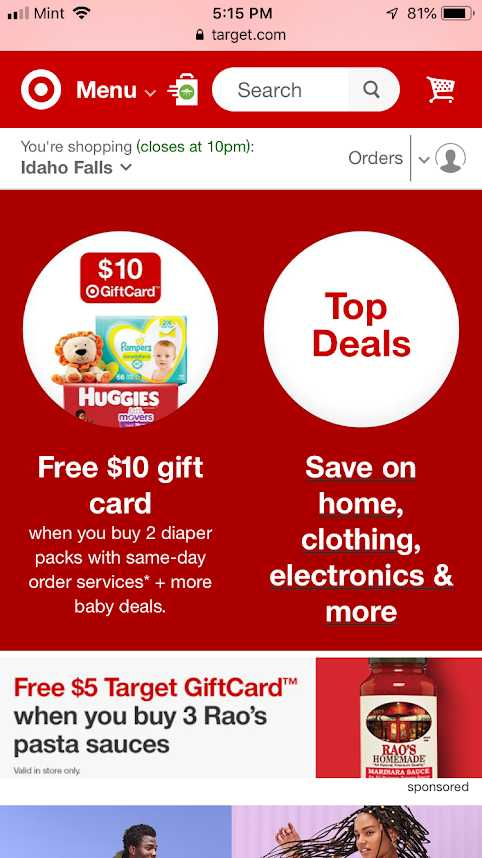
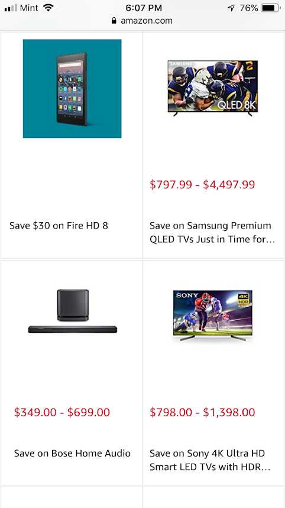
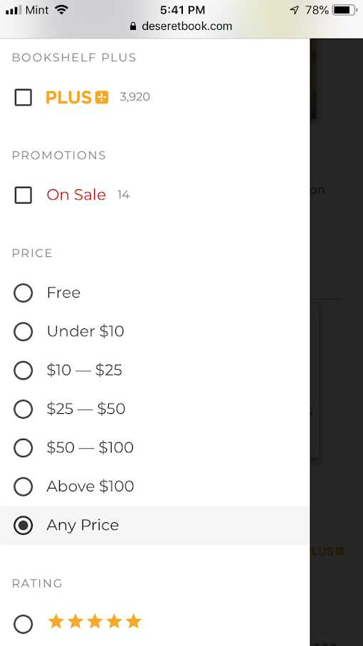

PARC: Contrast
Target
The contrast of the cores is one effective design used on this site. The red and white color has a very accentuated aspect that makes the visualization easier to read.
PARC: Repetition
Amazon
The repetition of the layout used to show each product makes the visualization of many items more organized and easier to identify.
Hick's Law
Deseret Book
This filter is simples and efficient. This feature reduces the time required to take a decision when the customer selects specific options.